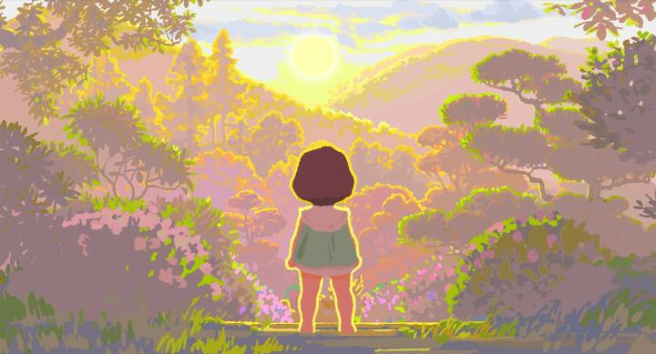
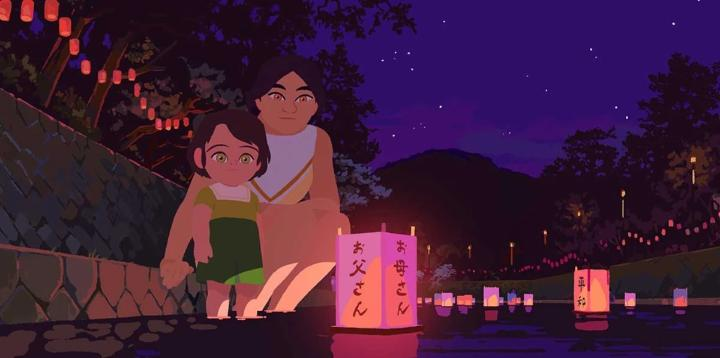

Disclaimer: This is a review of "Little Amelie (or The Character of Rain)," also known in French as "Amelie et la metaphysiques des tubes," which I believe translates literally as "Amelie and the Metaphysics of Tubes." The French title does make sense in context to the movie's opening scene, and I don't know why a different title was used for the English release. 2025 was a good year for animation, and in particular, French animation. I'm thinking of the powerful "Death Does Not Exist," the return of Sylvain Chomet in "A Magnificent Life," and a lot of awards buzz for "Arco" and "Little Amelie (or The Character of Rain)." Among the critics I follow, "Little Amelie" seemed to be the most critically popular, so I was looking forward to finally getting around to it. And... it's fine. I mean, it's good. It's fine. My personal biases in favour or against certain stories are showing up again. I've never really liked "coming-of-age" stories, especially when told by the point of view of a young child as they discover the wonders of the everyday world. Even when I was a toddler myself, the assumed target audience for these family-friendly films, I still didn't like them. They tended to cover innocent but uncomfortable feelings children come across for the first time, or otherwise portrayed beauty in everyday things, which... I see every day. There are countless films of this genre, especially in animation, and it simply isn't novel anymore. At its best, these films will find something new or meaningful to say, or take place in a new setting or time period. "Little Amelie" does this a little, helping enhance the charm, but it's not significant enough to feel especially meaningful to me, personally. The story is from the point of view of Amelie, an infant to a European family living in Japan (the father is a government expat). She narrates her experience from birth, up to the age of 2 1/2. Her narration quickly reveals she thinks of herself as God (the Wikipedia page for the novel this is based on explains a cultural feature in Jpaan is that infants are Gods and not mortals up until the age of 3, perhaps indicating how long they should be doted upon). This allows for some clever lines ("at first, there was nothing" she describes before her birth). Interestingly, Amelie is seen as "slow" at first by her family and doctors, not emoting, speaking, or walking at first, but when her consciousness and memory awakens at 2 1/2, she becomes more energetic, curious talkative, and cranky. In a family that already has an older brother and sister, Amelie's parents try their best to keep the house in order, with newfound help from a young Japanese woman as a housecleaner, and unofficially, Amelie's caretaker. One aspect I respect is that Amelie isn't portrayed as stupid, in a way we might think of infant children. Even before she speaks, her narration shows she's wise and mature, if perhaps somewhat self-centered. It's simply that she hasn't encountered the things present in this manifestation of the world, so of course she doesn't know about them until she experiences them. Or that sh'e limited by her physical state, suddenly frustrated by the inability to speak instead of babbling, which pushes her to learn to speak fully such that those around her would treat her seriously.

And of course, this takes place in Japan (the ears of millions of otaku suddenly perked up). No, this isn't anime. And it doesn't overly fetishize Japanese culture - from Amelie's perspective, this is just home. The movie could have taken place in virtually any other country. But there are little aspects that make Japan feel appropriate. Amelie's loud acting out is frowned upon by the family's landlord, wherein Japan is famously reserved and expects tourists to be so as well. Amelie's observations of being God, or of other everyday objects being Gods, is very much like the Shinto religion. And in a surprise dramatic moment in the second half of the movie, it's made known the movie is set only a decade or two after World War II, and in some locals (especially older ones), the wounds and emotions against Western people still hurt. To Amelie, she doesn't know about these subtleties (and therefore, their place in the story is minor to nonexistent), but adult viewers might catch on and appreciate the details. What exactly is the story about then? If anything, it's about Amelie experiencing loss for the first time, in multiple forms. There's a poignancy to that. But yet again, I ask myself the increasingly common question: couldn't this have been a 5 or 10 minute short film? At barely over an hour if exlcuding credits, "Little Amelie" is already short, so it'd be easy enough to edit this down. Doesn't the image of a cute, chubby baby running around barefoot warrant a longer runtime? No. And more importantly, this would have been stronger if parred down to a short film. To be a feature film risks feeling tedious or self-indulgent. Visually, the movie is colourful, in the way light would make objects look bright and cheerful in the eyes of a child. It's animated with vector shapes (e.g. Adobe Flash), and is purposely simplistic in details to enable this. There are brief moments of inspiration, like how outlines glow to resemble sunlight shining through. There's a particularly good scene of Amelie walking between walls of water, and the production remains true to its 2D aesthetic by parallaxing 2D assets rather than any 3D mesh trickery. Like the story, it's all pleasant, but not particularly remarkable. I ought to mention the English dub for being particularly strong, especially Amelie's performance - yes, the original French dub was on the Bluray disc, but especially for a family-friendly film like this, a good English dub is important, and I'm appreciative when it's done well. "Little Amelie or The Character of Rain" is probably the least interesting French-animated film to me from 2025. But in a bubble, it's still plenty good. That I think of it as lackluster is less a critqiue of the movie, but more a comemntary and compliment to the rest of the animation output we've seen in recent years. If, like Amelie, your eyes are still new to the world of film and animation, you'll still experience the wonder. - "Ani" More reviews can be found at : https://2danicritic.github.io/ Previous review: review_Lilo_&_Stitch Next review: review_Little_Vampire